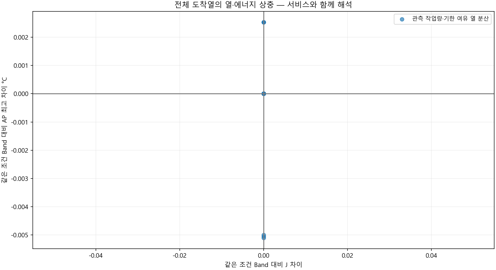
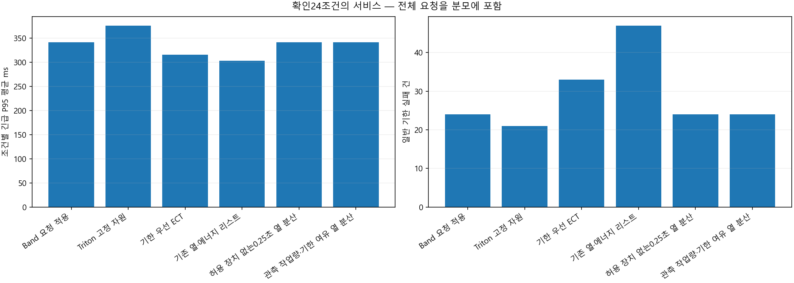
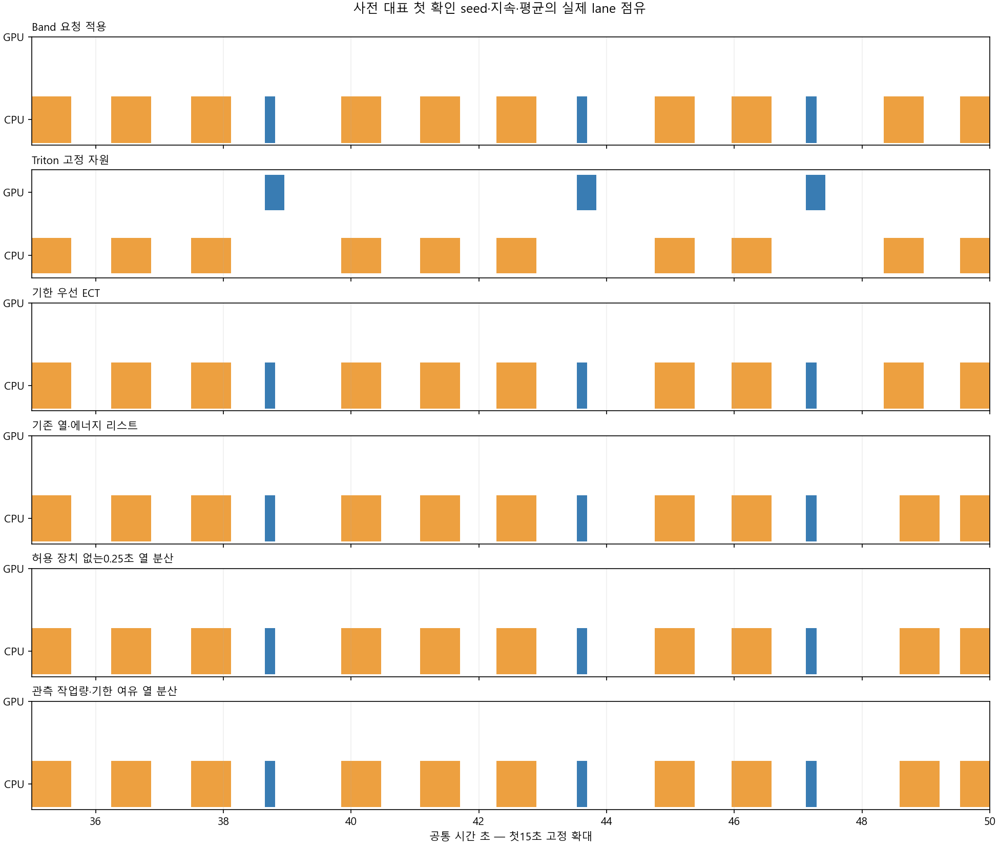
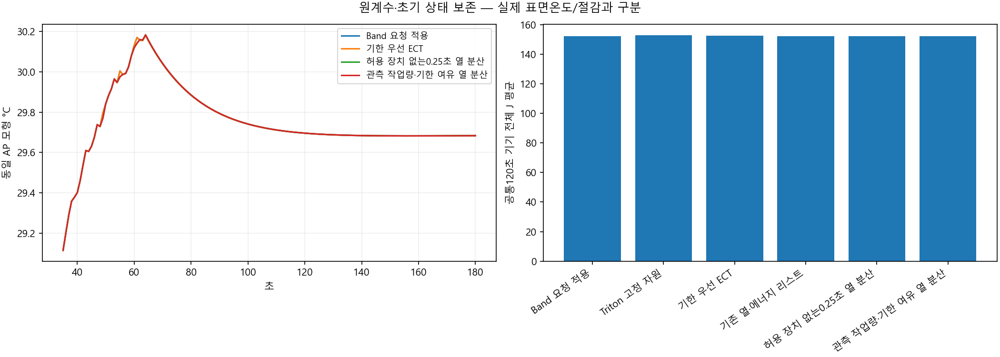
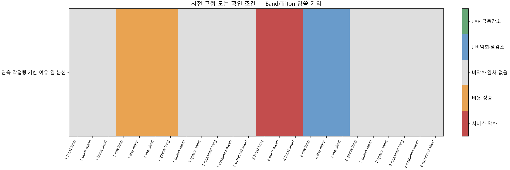

전체 도착 요청 · 개발24조건 뒤 선택 동결 · 새 확인24조건 · 6규칙. 산업공학 요소는 EDD·응답 여유·잔여 작업량·호환성·재계획입니다.
개발 선택: 관측 작업량·기한 여유 열 분산, 확인 적격: False. 물리적 절감이나 실제 표면온도 우위가 아닙니다.
설계·판정·한계 · 전체 확인 CSV · 대기 허용 장치 제거 비교
| 규칙 | 판단 차이 |
|---|---|
| Band 요청 적용 | 원 Band 요청 규칙 |
| Triton 고정 자원 | 원 Triton 고정 자원 규칙 |
| 기한 우선 ECT | 기한 순서·5단계 ECT |
| 기존 열·에너지 리스트 | 기존 EDD suffix·J/AP 리스트 |
| 허용 장치 없는0.25초 열 분산 | 허용 장치 없는0.25초 열 분산 |
| 관측 작업량·기한 여유 열 분산 | 관측 도착 간격 대비 작업량+credit 적합·현재큐 기한가능·0.25초 열 분산 |
| 정책 | 완료 | 예정 | 긴급 실패 | 일반 실패 | P95 평균 ms | J 평균 | AP 평균 | 양 기준 대비 열감소 | 공동감소 |
|---|---|---|---|---|---|---|---|---|---|
| Band 요청 적용 | 1584 | 1584 | 0 | 24 | 341.6047 | 152.2762 | 30.851893 | 0 | 0 |
| Triton 고정 자원 | 1584 | 1584 | 0 | 21 | 376.07337 | 152.75024 | 30.898304 | 0 | 0 |
| 기한 우선 ECT | 1584 | 1584 | 0 | 33 | 315.40312 | 152.38932 | 30.817382 | 0 | 0 |
| 기존 열·에너지 리스트 | 1584 | 1584 | 0 | 47 | 302.8875 | 152.28816 | 30.829609 | 6 | 3 |
| 허용 장치 없는0.25초 열 분산 | 1584 | 1584 | 0 | 24 | 341.6047 | 152.03679 | 30.917179 | 11 | 0 |
| 관측 작업량·기한 여유 열 분산 | 1584 | 1584 | 0 | 24 | 341.6047 | 152.2762 | 30.851578 | 3 | 0 |
| seed | 부하 | 문맥 | 후보 | 판정 | Band J 차이 | AP 차이 | P95 차이 ms | 일반 지연 ms |
|---|---|---|---|---|---|---|---|---|
| 813030101 | low | mean | Triton 고정 자원 | 서비스 악화 | 0.28555104 | 0.051015589 | 137.8747 | 0 |
| 813030101 | low | mean | 기한 우선 ECT | 비악화·열차 없음 | 0 | 0 | 0 | 0 |
| 813030101 | low | mean | 기존 열·에너지 리스트 | 비용 상충 | 0 | 0.0025300527 | 0 | 55.555556 |
| 813030101 | low | mean | 허용 장치 없는0.25초 열 분산 | 비용 상충 | 0 | 0.0025300527 | 0 | 55.555556 |
| 813030101 | low | mean | 관측 작업량·기한 여유 열 분산 | 비용 상충 | 0 | 0.0025300527 | 0 | 55.555556 |
| 813030101 | low | short_context | Triton 고정 자원 | 서비스 악화 | 0.26363747 | 0.049595087 | 130.42855 | 0 |
| 813030101 | low | short_context | 기한 우선 ECT | 비악화·열차 없음 | 0 | 0 | 0 | 0 |
| 813030101 | low | short_context | 기존 열·에너지 리스트 | 비용 상충 | 0 | 0.0025270679 | 0 | 55.555556 |
| 813030101 | low | short_context | 허용 장치 없는0.25초 열 분산 | 비용 상충 | 0 | 0.0025270679 | 0 | 55.555556 |
| 813030101 | low | short_context | 관측 작업량·기한 여유 열 분산 | 비용 상충 | 0 | 0.0025270679 | 0 | 55.555556 |
| 813030101 | low | long_context | Triton 고정 자원 | 서비스 악화 | 0.30746461 | 0.052436595 | 145.32086 | 0 |
| 813030101 | low | long_context | 기한 우선 ECT | 비악화·열차 없음 | 0 | 0 | 0 | 0 |
| 813030101 | low | long_context | 기존 열·에너지 리스트 | 비용 상충 | 0 | 0.0025328788 | 0 | 55.555556 |
| 813030101 | low | long_context | 허용 장치 없는0.25초 열 분산 | 비용 상충 | 0 | 0.0025328788 | 0 | 55.555556 |
| 813030101 | low | long_context | 관측 작업량·기한 여유 열 분산 | 비용 상충 | 0 | 0.0025328788 | 0 | 55.555556 |
| 813030101 | queue | mean | Triton 고정 자원 | 비악화·열차 없음 | 0 | 0 | 0 | 0 |
| 813030101 | queue | mean | 기한 우선 ECT | 서비스 악화 | 0.099798891 | -0.053759176 | -99.405694 | 275.85284 |
| 813030101 | queue | mean | 기존 열·에너지 리스트 | 서비스 악화 | 0.14304574 | -0.093413544 | -99.405694 | 680.97042 |
| 813030101 | queue | mean | 허용 장치 없는0.25초 열 분산 | J 비악화·열감소 | 0 | -0.013283732 | 0 | 138.88889 |
| 813030101 | queue | mean | 관측 작업량·기한 여유 열 분산 | 비악화·열차 없음 | 0 | 0 | 0 | 0 |
| 813030101 | queue | short_context | Triton 고정 자원 | 비악화·열차 없음 | 0 | 0 | 0 | 0 |
| 813030101 | queue | short_context | 기한 우선 ECT | 서비스 악화 | 0.10084523 | -0.05398328 | -91.682323 | 271.22453 |
| 813030101 | queue | short_context | 기존 열·에너지 리스트 | 서비스 악화 | 0.14544279 | -0.092634739 | -91.682323 | 683.34068 |
| 813030101 | queue | short_context | 허용 장치 없는0.25초 열 분산 | J 비악화·열감소 | 0 | -0.014691598 | 0 | 138.88889 |
| 813030101 | queue | short_context | 관측 작업량·기한 여유 열 분산 | 비악화·열차 없음 | 0 | 0 | 0 | 0 |
| 813030101 | queue | long_context | Triton 고정 자원 | 비용 상충 | -0.00049261755 | 0.00022667921 | 0 | -1.0102207 |
| 813030101 | queue | long_context | 기한 우선 ECT | 서비스 악화 | 0.098294335 | -0.053402863 | -107.12907 | 279.56715 |
| 813030101 | queue | long_context | 기존 열·에너지 리스트 | 서비스 악화 | 0.14019048 | -0.0940578 | -107.12907 | 677.71608 |
| 813030101 | queue | long_context | 허용 장치 없는0.25초 열 분산 | 비용 상충 | 0 | -0.011749878 | 0 | 138.88889 |
| 813030101 | queue | long_context | 관측 작업량·기한 여유 열 분산 | 비용 상충 | 0 | 0 | 0 | 0 |
| 813030101 | burst | mean | Triton 고정 자원 | 비악화·열차 없음 | 0 | 0 | 0 | 0 |
| 813030101 | burst | mean | 기한 우선 ECT | 서비스 악화 | 0.04324685 | -0.033258829 | 0 | 156.03759 |
| 813030101 | burst | mean | 기존 열·에너지 리스트 | 서비스 악화 | 0.18951142 | -0.11520358 | -139.96932 | 728.42016 |
| 813030101 | burst | mean | 허용 장치 없는0.25초 열 분산 | J 비악화·열감소 | 0 | -0.019951094 | 0 | 13.888889 |
| 813030101 | burst | mean | 관측 작업량·기한 여유 열 분산 | 비악화·열차 없음 | 0 | 0 | 0 | 0 |
| 813030101 | burst | short_context | Triton 고정 자원 | 비악화·열차 없음 | 0 | 0 | 0 | 0 |
| 813030101 | burst | short_context | 기한 우선 ECT | 서비스 악화 | 0.044597559 | -0.033347251 | 0 | 156.03759 |
| 813030101 | burst | short_context | 기존 열·에너지 리스트 | 서비스 악화 | 0.19304369 | -0.1139054 | -125.52292 | 727.19546 |
| 813030101 | burst | short_context | 허용 장치 없는0.25초 열 분산 | J 비악화·열감소 | 0 | -0.021347377 | 0 | 13.888889 |
| 813030101 | burst | short_context | 관측 작업량·기한 여유 열 분산 | 비악화·열차 없음 | 0 | 0 | 0 | 0 |
| 813030101 | burst | long_context | Triton 고정 자원 | 비악화·열차 없음 | 0 | 0 | 0 | 0 |
| 813030101 | burst | long_context | 기한 우선 ECT | 서비스 악화 | 0.04350821 | -0.032516035 | 0 | 159.64403 |
| 813030101 | burst | long_context | 기존 열·에너지 리스트 | 서비스 악화 | 0.18600209 | -0.11657922 | -154.4542 | 729.83088 |
| 813030101 | burst | long_context | 허용 장치 없는0.25초 열 분산 | J 비악화·열감소 | 0 | -0.018637388 | 0 | 13.888889 |
| 813030101 | burst | long_context | 관측 작업량·기한 여유 열 분산 | 비악화·열차 없음 | 0 | 0 | 0 | 0 |
| 813030101 | sustained | mean | Triton 고정 자원 | 비용 상충 | 1.4132099 | 0.082769755 | 0 | 0 |
| 813030101 | sustained | mean | 기한 우선 ECT | 비용 상충 | 0.23310538 | -0.065711681 | 0 | 37.57244 |
| 813030101 | sustained | mean | 기존 열·에너지 리스트 | J·AP 공동감소 | -0.10272886 | -0.035454672 | 0 | 2070.934 |
| 813030101 | sustained | mean | 허용 장치 없는0.25초 열 분산 | 비용 상충 | -0.97172508 | 0.2808633 | 0 | 1163.6194 |
| 813030101 | sustained | mean | 관측 작업량·기한 여유 열 분산 | 비악화·열차 없음 | 0 | 0 | 0 | 0 |
| 813030101 | sustained | short_context | Triton 고정 자원 | 비용 상충 | 1.2968443 | 0.075900129 | 0 | 0 |
| 813030101 | sustained | short_context | 기한 우선 ECT | 비용 상충 | 0.24888316 | -0.069668114 | 0 | 37.338929 |
| 813030101 | sustained | short_context | 기존 열·에너지 리스트 | J·AP 공동감소 | -0.043559242 | -0.040807981 | 0 | 2068.968 |
| 813030101 | sustained | short_context | 허용 장치 없는0.25초 열 분산 | 비용 상충 | -1.0071094 | 0.30309433 | 0 | 1192.1692 |
| 813030101 | sustained | short_context | 관측 작업량·기한 여유 열 분산 | 비악화·열차 없음 | 0 | 0 | 0 | 0 |
| 813030101 | sustained | long_context | Triton 고정 자원 | 비용 상충 | 1.5260018 | 0.085116186 | 0 | 0 |
| 813030101 | sustained | long_context | 기한 우선 ECT | 비용 상충 | 0.21350154 | -0.066267271 | 0 | 37.793524 |
| 813030101 | sustained | long_context | 기존 열·에너지 리스트 | J·AP 공동감소 | -0.25006728 | -0.03532789 | 0 | 1962.5358 |
| 813030101 | sustained | long_context | 허용 장치 없는0.25초 열 분산 | 비용 상충 | -0.95741066 | 0.27746382 | 0 | 1141.9031 |
| 813030101 | sustained | long_context | 관측 작업량·기한 여유 열 분산 | 비악화·열차 없음 | 0 | 0 | 0 | 0 |
| 813030102 | low | mean | Triton 고정 자원 | 서비스 악화 | 0.28555104 | 0.051158831 | 137.8747 | 0 |
| 813030102 | low | mean | 기한 우선 ECT | 비악화·열차 없음 | 0 | 0 | 0 | 0 |
| 813030102 | low | mean | 기존 열·에너지 리스트 | J 비악화·열감소 | 0 | -0.0050465306 | 0 | 83.333333 |
| 813030102 | low | mean | 허용 장치 없는0.25초 열 분산 | J 비악화·열감소 | 0 | -0.0050465306 | 0 | 83.333333 |
| 813030102 | low | mean | 관측 작업량·기한 여유 열 분산 | J 비악화·열감소 | 0 | -0.0050465306 | 0 | 83.333333 |
| 813030102 | low | short_context | Triton 고정 자원 | 서비스 악화 | 0.26363747 | 0.049734341 | 130.42855 | 0 |
| 813030102 | low | short_context | 기한 우선 ECT | 비악화·열차 없음 | 0 | 0 | 0 | 0 |
| 813030102 | low | short_context | 기존 열·에너지 리스트 | J 비악화·열감소 | 0 | -0.0050998427 | 0 | 83.333333 |
| 813030102 | low | short_context | 허용 장치 없는0.25초 열 분산 | J 비악화·열감소 | 0 | -0.0050998427 | 0 | 83.333333 |
| 813030102 | low | short_context | 관측 작업량·기한 여유 열 분산 | J 비악화·열감소 | 0 | -0.0050998427 | 0 | 83.333333 |
| 813030102 | low | long_context | Triton 고정 자원 | 서비스 악화 | 0.30746461 | 0.052583827 | 145.32086 | 0 |
| 813030102 | low | long_context | 기한 우선 ECT | 비악화·열차 없음 | 0 | 0 | 0 | 0 |
| 813030102 | low | long_context | 기존 열·에너지 리스트 | J 비악화·열감소 | 0 | -0.0049960541 | 0 | 83.333333 |
| 813030102 | low | long_context | 허용 장치 없는0.25초 열 분산 | J 비악화·열감소 | 0 | -0.0049960541 | 0 | 83.333333 |
| 813030102 | low | long_context | 관측 작업량·기한 여유 열 분산 | J 비악화·열감소 | 0 | -0.0049960541 | 0 | 83.333333 |
| 813030102 | queue | mean | Triton 고정 자원 | 비악화·열차 없음 | 0 | 0 | 0 | 0 |
| 813030102 | queue | mean | 기한 우선 ECT | 서비스 악화 | 0.1036069 | -0.050630473 | -110.20692 | 310.84736 |
| 813030102 | queue | mean | 기존 열·에너지 리스트 | 서비스 악화 | 0.1036069 | -0.050630473 | -110.20692 | 310.84736 |
| 813030102 | queue | mean | 허용 장치 없는0.25초 열 분산 | J 비악화·열감소 | 2.8421709e-14 | -0.016791476 | 0 | 68.99394 |
| 813030102 | queue | mean | 관측 작업량·기한 여유 열 분산 | 비악화·열차 없음 | 0 | 0 | 0 | 0 |
| 813030102 | queue | short_context | Triton 고정 자원 | 비악화·열차 없음 | 0 | 0 | 0 | 0 |
| 813030102 | queue | short_context | 기한 우선 ECT | 서비스 악화 | 0.10486874 | -0.050890823 | -102.48354 | 307.09003 |
| 813030102 | queue | short_context | 기존 열·에너지 리스트 | 서비스 악화 | 0.10486874 | -0.050890823 | -102.48354 | 307.09003 |
| 813030102 | queue | short_context | 허용 장치 없는0.25초 열 분산 | J 비악화·열감소 | 0 | -0.018032271 | 0 | 72.087331 |
| 813030102 | queue | short_context | 관측 작업량·기한 여유 열 분산 | 비악화·열차 없음 | 0 | 0 | 0 | 0 |
| 813030102 | queue | long_context | Triton 고정 자원 | 비악화·열차 없음 | 0 | 0 | 0 | 0 |
| 813030102 | queue | long_context | 기한 우선 ECT | 서비스 악화 | 0.10455765 | -0.050479352 | -117.93029 | 319.9756 |
| 813030102 | queue | long_context | 기존 열·에너지 리스트 | 서비스 악화 | 0.10455765 | -0.050479352 | -117.93029 | 319.9756 |
| 813030102 | queue | long_context | 허용 장치 없는0.25초 열 분산 | J 비악화·열감소 | 0 | -0.015625156 | 0 | 66.065173 |
| 813030102 | queue | long_context | 관측 작업량·기한 여유 열 분산 | 비악화·열차 없음 | 0 | 0 | 0 | 0 |
| 813030102 | burst | mean | Triton 고정 자원 | 비용 상충 | -0.019499624 | 0.023201319 | 0 | -85.527166 |
| 813030102 | burst | mean | 기한 우선 ECT | 서비스 악화 | 0 | 0 | 0 | 0 |
| 813030102 | burst | mean | 기존 열·에너지 리스트 | 서비스 악화 | 0.085173005 | -0.042460057 | 0 | 548.0554 |
| 813030102 | burst | mean | 허용 장치 없는0.25초 열 분산 | 서비스 악화 | 0 | 0.0088363377 | 0 | 166.66667 |
| 813030102 | burst | mean | 관측 작업량·기한 여유 열 분산 | 서비스 악화 | 0 | 0 | 0 | 0 |
| 813030102 | burst | short_context | Triton 고정 자원 | 비용 상충 | -0.020850333 | 0.023525815 | 0 | -85.527166 |
| 813030102 | burst | short_context | 기한 우선 ECT | 서비스 악화 | 0 | 0 | 0 | 0 |
| 813030102 | burst | short_context | 기존 열·에너지 리스트 | 서비스 악화 | 0.085730604 | -0.042211755 | 0 | 546.42895 |
| 813030102 | burst | short_context | 허용 장치 없는0.25초 열 분산 | 서비스 악화 | 0 | 0.0082545564 | 0 | 166.66667 |
| 813030102 | burst | short_context | 관측 작업량·기한 여유 열 분산 | 서비스 악화 | 0 | 0 | 0 | 0 |
| 813030102 | burst | long_context | Triton 고정 자원 | 비용 상충 | -0.018148914 | 0.022392227 | 0 | -85.527166 |
| 813030102 | burst | long_context | 기한 우선 ECT | 서비스 악화 | 0 | 0 | 0 | 0 |
| 813030102 | burst | long_context | 기존 열·에너지 리스트 | 서비스 악화 | 0.084695683 | -0.04327801 | 0 | 549.84647 |
| 813030102 | burst | long_context | 허용 장치 없는0.25초 열 분산 | 서비스 악화 | 0 | 0.0088495022 | 0 | 166.66667 |
| 813030102 | burst | long_context | 관측 작업량·기한 여유 열 분산 | 서비스 악화 | 0 | 0 | 0 | 0 |
| 813030102 | sustained | mean | Triton 고정 자원 | 비용 상충 | 1.8288171 | 0.16474138 | 0 | 0 |
| 813030102 | sustained | mean | 기한 우선 ECT | 비용 상충 | 0.39783073 | -0.068921919 | 0 | 109.46762 |
| 813030102 | sustained | mean | 기존 열·에너지 리스트 | 서비스 악화 | -0.33156882 | 0.17279687 | 0 | 1701.1876 |
| 813030102 | sustained | mean | 허용 장치 없는0.25초 열 분산 | 비용 상충 | -0.94716221 | 0.27996038 | 0 | 1111.7925 |
| 813030102 | sustained | mean | 관측 작업량·기한 여유 열 분산 | 비악화·열차 없음 | 0 | 0 | 0 | 0 |
| 813030102 | sustained | short_context | Triton 고정 자원 | 비용 상충 | 1.6857435 | 0.16007986 | 0 | 0 |
| 813030102 | sustained | short_context | 기한 우선 ECT | 비용 상충 | 0.42277038 | -0.067171863 | 0 | 108.41305 |
| 813030102 | sustained | short_context | 기존 열·에너지 리스트 | 서비스 악화 | -0.16613974 | 0.13534288 | 119.57145 | 1594.6057 |
| 813030102 | sustained | short_context | 허용 장치 없는0.25초 열 분산 | 비용 상충 | -0.95585028 | 0.27242405 | 0 | 1111.8748 |
| 813030102 | sustained | short_context | 관측 작업량·기한 여유 열 분산 | 비악화·열차 없음 | 0 | 0 | 0 | 0 |
| 813030102 | sustained | long_context | Triton 고정 자원 | 비용 상충 | 1.9720512 | 0.16939223 | 0 | 0 |
| 813030102 | sustained | long_context | 기한 우선 ECT | 비용 상충 | 0.45540417 | -0.07825138 | 0 | 138.00211 |
| 813030102 | sustained | long_context | 기존 열·에너지 리스트 | 서비스 악화 | -0.38475291 | 0.18193064 | 0 | 1702.3663 |
| 813030102 | sustained | long_context | 허용 장치 없는0.25초 열 분산 | 비용 상충 | -0.90663973 | 0.2847841 | 0 | 1103.7162 |
| 813030102 | sustained | long_context | 관측 작업량·기한 여유 열 분산 | 비악화·열차 없음 | 0 | 0 | 0 | 0 |




